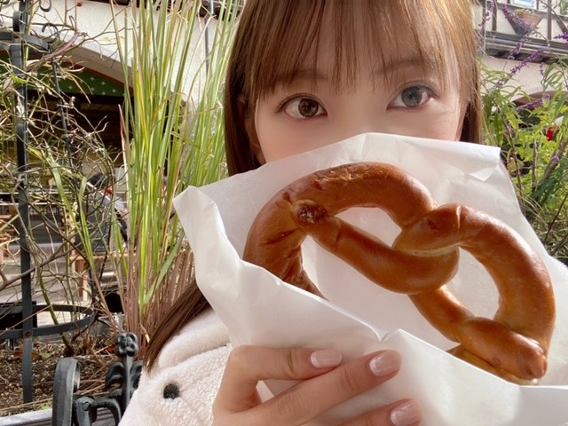
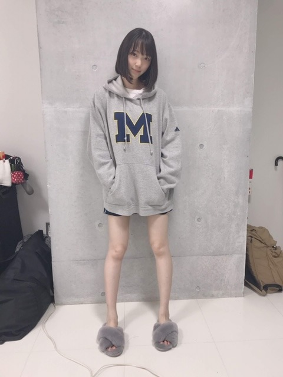

2019/1201Sun自分の服から家の柔軟剤の香りがして安心する瞬間
やほ〜
12月になりました！
もう2019年もラストスパートですね
12月4日...FNS歌謡祭
12月11日...オールナイトニッポン2期生大集合
12月14日.15日...Abema TV乃木坂世界旅
12月27日...Mステ
12月30日...レコード大賞
12月31日...紅白歌合戦
よろしくお願いします。

この間、神戸観光してきました
ハーブ園楽しかったです。
ハーブやお花がたくさんでいちいち可愛くてはしゃいでました！
神戸牛も美味しかったし
チーズフォンデュ、焼き牡蠣、ソーセージ、パン、などたくさん食べました✨
寒いからか、ずっと眠いです...
寝すぎると怠くなるので気をつけなきゃ〜
12月、年末ということで
まえに質問募集したコメント欄から質問すこし返しますね
好きな男性ファッションはどんなのですか？
...セットアップ似合う人オシャレやなって思います！あとはニットとか。シンプルが1番だし柄物は基本好きじゃないです
堀ちゃんは涙袋が綺麗ですけど努力で作れるもんですか？
...元々涙袋はある方ですが強調させるためのメイクはしてます！インスタに近々あげますね
@horimiona_2nd
お風呂 の湯船につかっているときはなにをしてますか〜？
...ボーっと目の前を見ています
女子バレー見てる？
...母が昔から見ていてわたしも見ています
ナイトケアは何をしてますか？
...顔はETVOSの保湿ラインの化粧水、美容液、乳液
たまにパック
体はニベアの美白クリームを塗りたくっています
未央奈ちゃんはもしアイドルではなかったらどんな職業に就きたいですか？
...乃木坂で良かったなって思っていますが子供や動物が好きなので保育士さんかペットサロンの方になりたかったです
あとウエディングプランナーにも興味がありました
プロデュースをしたり人を笑顔にする職業っていいなって
今1番ハマってる食べ物は何ですか？
...やっぱりしょっぱい梅干しが昔から好きですねぇ
ゆなちゃんとよく話す？？
のぎおびでも言ってたから2人でどこか遊び行ってるの見てみたい！
...時々話しかけてきてくれます！カワイイ
鏡を見る度、写真を撮る度に
可愛いなって思いますか？？
これは嫌味じゃなくて！めちゃくちゃ綺麗な人ってどう思うのか気になっただけです！
...アイドルだから自分に自信は持っていたいって思っています常に。でも初期から自信が持てなくてどうしたら自信を持てるようになるかをずっと試行錯誤考えてきました。コンプレックスはメイクでカバーして、服装も自分に合う服を選び続けていくこと、すきな世界観やすきなものを見続けること、自分が劣っていることに対して貪欲になり努力することは大切にしています。何もしなくなったらそこで終了なんです。
ダンスや歌も苦手だったし苦手意識もあったけどまずは苦手意識を持たずに飛び込む勇気と、嫌いなものを好きになることから始めて、気づいたら大好きになっていました。もっと踊りたいし歌いたいなって追求していきたいなって今は思っています。
正直、鏡や写真を見て自分の顔をめちゃかわいい！満足！とは思えないけど、だいすきな母の顔に似ているので自分の顔はとてもすきです。もっともっと可愛くなりたいって思いながら毎日自分磨きを楽しみます！
未央奈の一番好きな天気は！！
...秋の夕方の晴れの日
こんな人気で、まだこんなにブログ更新するのってすごいと思います！
自分の中のポリシーみたいなものですか？
...人気だとも思わないし歴が長くなったから更新しなくなるとかもないです
わたしは乃木坂のメンバーとして加入してからずっとやりがいだったり夢とかが変わってなくて、こうしてブログを出来る限り更新していろんな方との交流をするのが当たり前なことで生きがいでもあるんです。
むしろつまらないブログを見て、コメントしてくださる皆さんには感謝しかないです。。
お気に入りの服のブランドは？
...SNIDEL、FURFUR、FRAYID、H&M、ZARA、ameri、UNIQLO
すきな雰囲気はDIOR、フィリップリム、サンローラン
目標にしてる女性の方はいらっしゃいますか？？
...強くて柔らかくて美しい女性に憧れます
牛肉で言うとヒレのような
乃木坂に入ってからいままで自分の中でここが1番変わったなというところは！
...洋服やコスメなど美容関係がだいすきになりました
入る前はメイクの仕方すらも分からない芋っ子でした。
あと、ポジティブになった！
マイナス思考人間といえば私！でしたもん。笑
どうしようもなく悲しい時はどうしたらいいですか？
...悲しい時って1人で閉じこもりがち。何でわたしだけが...？とか私の辛さなんて誰も分かってくれないってなりませんか？
でもあなただけではなくて人間誰しもが悲しみを経験して越えて生きているので、みんな仲間です。
話を聞いてもらったり甘えてみるのも大事です。周りの人はあなたが思っている以上に頼りにされたい、って思って手を差し伸べてるはずですよ。
リクエストになってしまいますが、初ちゃんの写真がみたいです（ ; ; ）
...わかる人にはわかるMパーカー！

みおなちゃん、自由の彼方やった時のヘアアレンジ教えてください♡
...ねじりゆるハーフアップです
右側と左側にわけて、ぐるんとハーフアップの部分をねじってピンで留めるだけ。毛先は外ハネにしてました！
IUさんを参考にしたよ
今後演じてみたいキャラクターはありますか？(悪女とかゾンビとか)
...悪女！ブライダルウォーズっていう映画を見てコメディ要素もありながら全力女子！みたいな役も楽しそう。メイクやファッションにこだわった役もいいなぁ
arの表紙に選ばれて、今の新しいarでの目標とかありますか？
...女性としてまたパワーアップをして表紙を飾ること。
あとは連載や撮影を通して読者のみなさんと一緒にオンナ度をあげていきたいです！
未央奈ちゃんはもし話せるなら何語話してみたい？
...フランス語！南フランス行ったとき全然分からなくて...
TWICEで誰ペンですか？
...みなさん大好きですが特にミサモペンです〜
先月ブログで仰っていた未央奈、日奈子、みり愛、絢音ちゃんと蘭世で遊んだ話が気になります！
...すっかり忘れてました
お蕎麦を食べに行ってからカラオケに行きました、
お蕎麦を待ってる間はみんなで人狼して楽しかったなぁ
未央奈ちゃんオススメのプチプラコスメってなんですか？
...WHOOMEは全部良すぎて欠かせないし
CANMAKEもハイライトやマットアイシャドウが万能で好きです
空って食べたくなる時ありませんか？この気持ちわかってほしい！！
...空は飲めそうだなって思います
どちらかというと雲を食べたい
スタイル維持のために、特に食生活で気をつけてることって何かありますか？
...ポテチがだいすきでよく食べてるからなんとも言えないのですが、食べすぎたなって思ったら次の日は軽くしたりしてます
あとは血液型毎に合う合わない食材を調べてます
メイクをしたりお洋服を選ぶときは自分のパーソナルカラーを気にしたりしますか？
...自分に合う、合わない色は把握していてなるべく意識してます！わたしはブルベ夏なのでぼやけすぎないように程よい発色感と爽やかさを大切にしています
ではは
コメント(391)
乃木坂世界旅すごく楽しみです！(^^)
寒くなってきたので、体調に気をつけてください！
応援してます！
柔軟剤の香り癒されますよね～
神戸も落ち着ける街ですよね！
昔住んでて思い出深いですよ♪
年末になると気持ちが張りますが、
年末の大活躍とっても楽しみです✨
質問返しいっぱいで嬉しいですよー！！
寒い時期の睡眠とっても大事ですよね☆
自分はシンプルコーデしか似合わない～笑
みおちゃんの涙袋はとっても魅力的です♡
妹がウェディングプランナーやってます！
やりがいが沢山あると言ってましたよー♪
ゆなちゃんは同じ誕生日で注目してます！
みおちゃんの事も更に理解したいですよ♡
みおちゃんはとってもポジティブですし、
意志がはっきりしてて素晴らしいですね✌
初ちゃんの写真もとても可愛いらしいな！
これからの新チャレンジも楽しみですよ☆
インスタ等もとっても楽しみにしてます☺️
堀ちゃんのプロ意識、尊敬します！
アイドル、女優としてのプライドと
責任感を持って仕事に向かっていると
強い感じます！
だから、堀ちゃんが大好きだし、
応援したくなるです！
いつもありがとう〜
本当に私の憧れです！メイクとかいろいろ参考にさせてもらってます！冬のコーデもっと沢山見たいです あとどんなコートを着てるとか気になります！！
もう12月だね！
早いよね！
歌番組全部見ます！
またコメントします！
人を笑顔にする職業
喜んでもらえたり
ありがとう！って
言ってもらえたりすると
役に立てて良かったなぁと
実感できて嬉しい瞬間です
未央奈さんと共感できた
気がします(^_^)
今日のブログは未央奈さんの
知らなかった一面を
たくさん知ることができて
感動しています
インスタの写真
空がとても素晴らしかったです
全部みてますよ～
年末らしいスケジュールですね
健康に気をつけて
楽しんでくださいな(^_^)
大好きです
年末めちゃめちゃ歌番組あるじゃん！！それを楽しみに毎日頑張る！！とっても忙しいだろうけど体こわさないように頑張って！！
春休み、旅行で神戸に行くんだけど、おすすめのところは？？
今日も1日お疲れさまでした
質問いっぱい返してくれてありがとー
オレも質問したけど何質問したっけ？
はて？？笑
12月は全握もありますからね！
よろしくお願いします
では、明日も1日楽しもうd(@^∇ﾟ)/ﾌｧｲﾄｯ♪
o(ﾟ▽＾)ﾉｼまたねぃ♪
ブログ更新ありがとうです☺️
質問の丁寧な回答ありがとう！！✨
神戸に観光に行ったんですね
後、アーティスト歌謡祭みました！
インフルエンサーがすごくカッコ良かったです！！
風邪惹いてしまった？
もう12月なんだよね…忙しい時期と思いますので体調崩さず頑張ってください✨
はちみつ柚子茶飲んで早く治してね
では、これからも頑張ってね
質問にも1つ1つ丁寧に答えてくれて嬉しいです！
自分は頑張ろうと思っても途中で怠けてしまい、すぐに自分に甘くなります。でも、未央奈みたいに努力を怠らず、少しでも自分磨きをしてみようと思います！そう思えたのは未央奈のおかげです。本当にいつもありがとう！
音楽番組全部見るね！風邪ひかないように頑張ってください！ずっと応援してます！
ブログ更新ありがとう！
質問返してくれてありがとう！
色んなこと教えてくれてめっちゃうれしい！
12月はいろんな音楽TVがあるね！
全部絶対見るね！がんばれー！
Mパーカー着てる未央奈かわいい！
土日に岐阜行ってきたよ！
高山市って所だった！
商店街の雰囲気がめっちゃ良かった！
次は丸デブ総本店行きたい！
これからも応援してる！
がんばれー！
今年もレコ大取れるといいですね！
ANNと乃木坂世界旅が特に気になってます。
Mパーカーわからない。。勉強不足。。
12月忙しいと思うけど頑張ってください！
未央奈のこともっともっともっともっともっともっともっともっと好きになった。
未央奈の生き方ってすごいなぁっていつも思う、わたしの憧れです
初ちゃんも好きです
風邪かアレルギーなのかな？
大事に至らないと良いです。
柔軟剤は何を使っていますか？
自分は何気なくずっとソフラン使ってます。
早くも12月ですね。
色々楽しみですが、来週は特別ですね。
レコメンの後が、オールナイトニッポンで大変でしょうが楽しみすぎます。
神戸羨ましいです。
ハーブ園楽しそうです。
神戸牛も美味しかったのでしょうね。
地味ですが明石焼きは好きですか？何気に好きです。
質問返し、大変ですが愛を感じます。
未央奈さんの言葉、好きですよ。
寒いですが、お身体には気をつけてくださいね。
頑張って行きましょう！
みおなちゃんブログ更新ありがとうございます＾＾
みおなちゃんの女子力の高さ…毎度のことに尊敬します…
血液型によって合う食材とかあるの初めて知りました！
かわいくて努力家なみおなちゃんを見習ってもっと美容に気をつけていこうって思えます＾＾
インスタの方の美容投稿も待ってます！
ブルベ夏とは、どんな状態ですか？
本当にメイク好きで今度は葉月以外のメンバーにもメイク術を、乃木坂工事中で披露してほしいー。本当にいろんな事教えて下さい。参考にしながらメイクが上手く出来るようになりたい。本当にありがとー堀未央奈メイクアップ。
ブログ更新ありがとー４期生のメンバーにもメイクしてもらいたい。本当にありがとー私もメイクに、励みます。
楽しいブログ待ってますね。年末、歌番組で忙しくなりますけど今年の最後まで最高のパフォーマンスよろしくです。
体調に、気お付けて素敵な乃木坂メンバーとして頑張ってください。応援します。堀未央奈ちゃん。それでは、
バイバイ。
嬉しいな！
チャァオ～～!☆彡
プリンセスみおちゃん、こんばんは～～⤴️⤴️❕❤️❤️❤️❤️❤️笑顔
いつもお仕事で忙しいのに～～
マメにブログ更新してくれてぇ～～～⤴️⤴️⤴️
嬉しい～～⤴️⤴️よぉ～～⤴️⤴️❕❤️❤️❤️❤️❤️笑顔
・・・❕笑顔
香料～～⤴️⤴️・・
おいら、石油系の香料を嗅ぐと急に頭痛がしはじめて大の苦手だけど～～⤴️⤴️
柔軟剤はいいよねぇ～～～⤴️⤴️❕❤️❤️❤️笑顔
嗅ぐとくすぐる、優しい～～～⤴️⤴️
いい香りが好きです❕❤️❤️❤️❤️❤️笑顔
また全然関係ないですけど
スーパーに行くと気になる商品の匂いを嗅ぎまくります❕笑顔
店員さんが、めっちゃ目の前にいても❕笑笑
それでは、綺麗なぁみおちゃんまたブログ更新楽しみにしてま～す❕❤️❤️❤️❤️❤️笑顔
(みおちゃんのポニーテールが大大大好きです❕❤️❤️❤️❤️❤️笑顔)
お仕事楽しく頑張ってねぇ～❕❤️❤️❤️❤️❤️笑顔
またねぇ～❕❤️❤️❤️笑顔
(*^▽^)/★*☆♪❤️❤️❤️
☆大人しい、おすまし！より☆彡
未央奈の仲間思いな所が好きです！
唐突な質問だけど、今でもバナナマンさんは尊敬する人１位ですか？
バナナマンファンの学生より。
年末はTVの前から離れられませんな～
色々観るよ 楽しみー
こんないい子推した自分は見る目あるなと笑
いつもありがとう本当に大好き！！
未央奈ちゃん今晩は!
今日も1日お疲れ様です!
今日から師走に突入しましたね!
先日の幕張でのベストアーティスト生出演お疲れ様です!
ザピーナッツの恋のバカンスパフォーマンスかっこ良かったですね!
俺も小さい頃本人の映像を見ましたけれども、再現も素晴らしかったですね!
水曜日はFNS歌謡祭が2週続きますね!
その後は名古屋での握手会は勿論年末はレコ大紅白歌合戦年越しプレミアムライブの出演も有りますね!
風邪など体調崩さない様気を付けてお過ごし下さい!
其れではお休みなさい!
神戸観光いいですね。
写真可愛いですね。
今日もブログをかいてくれてありがとう
インスタも欠かさずチェックしてます
未央奈ちゃんのメイクや考え方がとても好きです
年末、風邪には気をつけてお仕事頑張ってください
いつもテレビの前で応援してます
年末になって色々と、忙しいと思いますがたくさんの活躍をとても楽しみにしています
今年もみおなちゃんで締めくくって、来年もみおなちゃんに癒されたいーー！
質問です
ZARAで好きなコーデはなんですか？
これからもたくさん更新待ってます！
無理しない程度にね(^-^)
H&MとZARA 私もよく買ってる！嬉しい！
初ちゃんの写真めっちゃ足綺麗～～
私も努力して堀ちゃんみたいになれるように頑張ろうって思いました。
ホットギミックもう一回見たいけどレンタルやさんまだいけてないのでちかいうちに行こうと思います
また映画してほしいです！！
私はもっと昔から乃木坂知ってて自分がもっと可愛くて自信があったら乃木坂に受けて入りたかったなあって最近思うの！とってもおこがましいことなんだけど、、
でもねみおなちゃんのインスタ見ててメイクについて学んで自分の理想な女の子磨きしたら良いんじゃないかなって思い始めて、すごい自分の中で変わった気がするんだ〜あとねこの前、葉月ちゃんにメイクしてる乃木中みて余計にそう思った！！
みおなちゃんみたいに諦めないで自分に自信持てるようになりたい！そう思わせてくれたみおなちゃんに感謝！
あと、、
みおなちゃんのメイク講座をうけたいです
[質問]ボディマッサージを自分でやってたらどんな感じか教えて下さい！
いつも頑張ってるなーと思ってた❗
無理して辛くなってなければいいなーって、ちょっと心配になることもあったけど。
末永くアイドルでいてほしいと思います～❗❗
応援してます❗
未央奈ちゃんはショートカットですごく髪の毛が綺麗だなーと思うのですが、髪の毛のケアは何をしていますか??おすすめのヘアオイルなど髪の毛を乾かす時のコツなどありましたら教えて欲しいです！私もショートカットなので参考にしたいです
あとベストアーティスト観たんだけど、
恋のバカンスのダンス良かった～！
いつも好きだけど、あのときの髪型好き～❤️
もちろんインフル、singout！も良かった！
一期、二期生だけだったのも久しぶりで、いつも通りももちろん良いんだけど、嬉しかった！！
絢音ちゃんとシンメも良かったね☺️
みおなのメイク情報やスキンケア情報すごく参考になります♡
よかったら使ってるやつ一式教えてほしいです〜！
今後の乃木坂46の出演情報おしえてくれてありがとうございます
カレンダーに書いときます！
そして、質問にもあったように、忙しいだろう中頻繁にブログを更新してくれて、そして今日はこんなにたくさん質問に答えてくれて、その努力に頭が下がりますね。
僕は最近は堀さんのブログにコメントすること多い方なのかな？と思うんですけど、それはやっぱりこうやって堀さんが頻繁にブログを更新してくれるから、ということと無関係ではないと思いますね！
そして、個人的に堀さんと共通点というかなにか僕と似たようなことに興味があったりして、コメントしたい話題が多いからということも理由として大きいかなと思いますね！
それこそ、今回のブログもそうですね！
僕も神戸の街が好きです
またなにか話したいことがあればコメントします。
そうですね、きっとまたすぐにあるでしょう！
健康には気を付けてお過ごしください！
地元の神戸に来られてたって知っただけで感動してました！
頑張って下さい(о´∀`о)
未央奈ちゃんバリ好きやで〜
ゆうぴです！
私も神戸のハーブ園に行ったことがあります！
建物もお花も可愛いよなぁ❤︎
美容やメイクのことを書いてる未央奈のブログを
いつも楽しみに見てます❤︎
これからも女の子が見て勉強になるブログ
楽しみにしてるね❤︎
ゆうぴより
握手会 楽しみだな〜
神戸に来ていたんだね。
関西人としては、
プライベートで未央奈が
関西にいたと思うと、
何だか不思議な気持ちで、
凄く嬉しいです。
この間、
乃木坂をテレビで観ていたら、
娘が「この子、凄く可愛い！」
と言いました。
「堀未央奈って言うんだよ。arのモデルもしてるよ。」
と教えてあげました。
ちなみに、娘は未央奈のいっこ下で、
嵐ファンです。
推しが、
娘に誉められて、
凄く嬉しかったです。
これから、
年末にかけて、
凄く忙しいだろうけど、
くれぐれも、
身体には気をつけて下さいね。


先日のベストアーティストお疲れ様！
未央奈ちゃんのダンスめちゃくちゃカッコ良かったよ！
年末はFNS歌謡祭、レコ大、紅白…歌番組が多いけど
最後まで頑張ってね！
テレビの前から応援してるよ！
あと、21日の大阪での全国握手会行くから待っててね！
めちゃ楽しみ
14、15の乃木坂世界旅も絶対みるよ！
楽しみすぎる！
次のブログも楽しみにしてるよ！
またね！